Die Tragfähigkeiten der Tabellen 1 und 2 "Anschlagseile mit Fasereinlage" entsprechen der FSA-Tabelle (Fachverband Seile und Anschlagmittel, Prinz-Georg-Straße 106, 40479 Düsseldorf), weil Seile nach dieser Veröffentlichung marktüblich sind. Die Tragfähigkeit ist nicht immer die höchstmögliche nach DIN EN 13 414 (Teile 1 oder 3), sondern abgestimmt auf die wirtschaftlich sinnvolle Kombination des Seiles mit Haken und Aufhängegliedern.
Werden Seile vom Hersteller mit geeigneten Zubehörteilen ausgestattet mit den Tragfähigkeitswerten der Europäischen Norm geliefert, so dürfen sie entsprechend den Tragfähigkeitsanhängern belastet werden.
Die Tragfähigkeitswerte der Tabelle 3 "Anschlagseile mit Stahleinlage", Tabelle 4 "Kabelschlagseile mit Stahleinlage", Tabelle 5 "Kabelschlag-Grummets mit Fasereinlage" und Tabelle 6 Buchstaben a) und b) "Kabelschlag-Grummets mit Stahleinlage" entsprechen den Teilen 1 und 3 der DIN EN 13 414 und stellen ab 100 mm ø einen Auszug dar. Durch Striche (---) gekennzeichnete Felder sind bei schweren Seilen unübliche Anwendungsfälle, weil man bei Tabellen 1 und 2 dann Kabelschlagseile einsetzt bzw. bei Tabelle 6 Buchstabe b) den Schnürgang vermeidet, insbesondere in Verbindung mit Neigungswinkeln.
Gespleißte Seile haben gegenüber Seilen mit Pressklemmen eine um 12 % niedrigere Tragfähigkeit.
Tragfähigkeitstabellen siehe Folgeseiten
Tabelle 1:
Anschlagseile mit Fasereinlage, Seilklassen 6 x 19 und 6 x 36 oder Endlosseile mit zwei Pressklemmen (FC)
Neigungswinkel |
Einsträngiges Anschlagseil | Zweisträngiges Anschlagseil | Drei- und viersträngiges Anschlagseil | Endlosseil | |||
| 0° | 0° | 0° bis 45° | 45° bis 60° | 0° bis 45° | 45° bis 60° | 0° | |
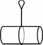 |
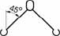 |
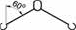 |
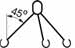 |
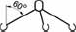 |
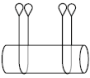 |
||
| direkt | geschnürt | direkt | direkt | direkt | direkt | geschnürt | |
| Seilnenn- durchmesser mm |
Tragfähigkeit in kg | ||||||
| 8 | 700 | 560 | 950 | 700 | 1500 | 1050 | 1100 |
| 9 | 850 | 680 | 1200 | 850 | 1800 | 1300 | 1400 |
| 10 *) | 1000 | 800 | 1400 | 1000 | 2100 | 1500 | 1600 |
| 11 *) | 1250 | 1000 | 1800 | 1250 | 2600 | 1900 | 2100 |
| 12 *) | 1500 | 1200 | 2100 | 1500 | 3200 | 2300 | 2500 |
| 13 *) | 1750 | 1400 | 2500 | 1750 | 3700 | 2600 | 2900 |
| 14 *) | 2000 | 1600 | 2800 | 2000 | 4200 | 3000 | 3200 |
| 16 | 2700 | 2150 | 3800 | 2700 | 5650 | 4000 | 4300 |
| 18 *) | 3150 | 2500 | 4400 | 3150 | 6600 | 4700 | 5000 |
| 20 *) | 4000 | 3200 | 5600 | 4000 | 8400 | 6000 | 6400 |
| 22 *) | 5000 | 4000 | 7000 | 5000 | 10500 | 7500 | 8000 |
| 24 | 6300 | 5000 | 8800 | 6300 | 13200 | 9400 | 10000 |
| 26 *) | 7000 | 5600 | 9800 | 7000 | 14700 | 10500 | 11200 |
| 28 *) | 8000 | 6400 | 11200 | 8000 | 16800 | 12000 | 12800 |
| 32 | 11000 | 8800 | 15000 | 11000 | 23000 | 16500 | 17600 |
| 36 | 14000 | 11200 | 19000 | 14000 | 29000 | 21000 | 22400 |
| 40 | 17000 | 13600 | 23500 | 17000 | 36000 | 26000 | 27200 |
| 44 | 21000 | 16800 | 29000 | 21000 | 44000 | 31500 | 33500 |
| 48 | 25000 | 20000 | 35000 | 25000 | 52000 | 37000 | 40000 |
| 52 | 29000 | 23000 | 40000 | 29000 | 62000 | 44000 | - |
| 56 | 33500 | 26800 | 47000 | 33500 | 71000 | 50000 | - |
| 60 | 39000 | 31000 | 54000 | 39000 | 81000 | 58000 | - |
*) Tragfähigkeiten bis auf letzte Spalte wegen marktüblicher Haken und Zubehörteilen (siehe DIN EN 1677) etwas reduziert. Bei Einbau geeigneter Zubehörteile etwas höhere Tragfähigkeiten entsprechend DIN EN 13 414-1.
Anmerkung:
Bei den Tragfähigkeiten in Tabelle 1 wird vorausgesetzt, dass bei einsträngigen Anschlagseilen mit Schlaufen ohne Kausche der Anschlagpunkt einen Durchmesser von mindestens dem Zweifachen des Seilnenndurchmessers hat.
Tabelle 2:
Anschlagseile mit Fasereinlage, Seilklassen 6 x 19 und 6 x 36 geschnürt oder Endlosseile mit zwei Pressklemmen (FC)
Neigungswinkel |
Einsträngiges Anschlagseil | Zweisträngiges Anschlagseil | Zweisträngiges Anschlagseil | Endlosseil |
Doppelstrang |
| 0° | 0° bis 45° | 45° bis 60° | |||
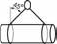 |
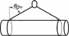 |
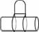 |
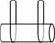 |
||
| geschnürt | geschnürt | geschnürt | geschnürt | zweifach umgelegt | |
| Seilnenndurchmesser mm | Tragfähigkeit in kg | ||||
| 8 | 560 | 760 | 560 | 1100 | 2800 |
| 9 | 680 | 960 | 680 | 1400 | 3400 |
| 10 | 800 | 1100 | 800 | 1600 | 4000 |
| 11 | 1000 | 1440 | 1000 | 2100 | 5000 |
| 12 | 1200 | 1700 | 1200 | 2400 | 6000 |
| 13 | 1400 | 2000 | 1400 | 2900 | 7000 |
| 14 | 1600 | 2200 | 1600 | 3200 | 8000 |
| 16 | 2150 | 3050 | 2150 | 4300 | 10800 |
| 18 | 2500 | 3500 | 2500 | 5000 | 12600 |
| 20 | 3200 | 4500 | 3200 | 6400 | 16000 |
| 22 | 4000 | 5600 | 4000 | 8000 | 20000 |
| 24 | 5000 | 7000 | 5000 | 10000 | 25200 |
| 26 | 5600 | 7800 | 5600 | 11200 | 28000 |
| 28 | 6400 | 9000 | 6400 | 12800 | 32000 |
| 32 | 8800 | 12300 | 8800 | 17600 | 44000 |
| 36 | 11200 | 15500 | 11200 | 22400 | 56000 |
| 40 | 13600 | 19000 | 13600 | 27200 | 68000 |
| 44 | 16800 | 23500 | 16800 | 33500 | 84000 |
| 48 | 20000 | 28000 | 20000 | 40000 | 100000 |
| 52 | 23000 | 32000 | 23000 | - | - |
| 56 | 26800 | 37500 | 26800 | - | - |
| 60 | 31000 | 43500 | 31000 | - | - |
Anmerkung 1:
Die Schnürgangstabellenwerte sind von den Endlosseilwerten DIN EN 13414-1 abgeleitet und damit aufgerundet, weil die Seile wegen der Einschnürung in der Tragfähigkeit um 20 % reduziert sind, die Beschlagteile aber davon nicht beeinflusst werden.
Anmerkung 2:
Schwere Endlosseile werden üblicherweise aus Seilen gelegt (Tragfähigkeiten siehe Tabellen 5 und 6).
Tabelle 3:
Tragfähigkeiten für Anschlagseile mit Stahleinlage für die Seilklassen 6 x 19, 6 x 36 und 8 x 36 mit verpressten Seil-Endverbindungen (IWRC)
Neigungswinkel |
Einsträngiges Anschlagseil | Zweisträngiges Anschlagseil | Drei- und viersträngiges Anschlagseil | Endlosseil | |||
| 0° | 0° | 0° bis 45° | über 45° bis 60° |
0° bis 45° | über 45° bis 60° |
0° | |
| direkt | geschnürt | direkt | direkt | direkt | direkt | geschnürt | |
| Seilnenn- durchmesser mm |
Tragfähigkeit in kg | ||||||
| 8 | 750 | 600 | 1050 | 750 | 1550 | 1100 | 1200 |
| 9 | 950 | 760 | 1300 | 950 | 2000 | 1400 | 1500 |
| 10 | 1150 | 920 | 1600 | 1150 | 2400 | 1700 | 1850 |
| 11 | 1400 | 1100 | 2000 | 1400 | 3000 | 2120 | 2250 |
| 12 | 1700 | 1350 | 2300 | 1700 | 3550 | 2500 | 2700 |
| 13 | 2000 | 1600 | 2800 | 2000 | 4150 | 3000 | 3150 |
| 14 | 2250 | 1800 | 3150 | 2250 | 4800 | 3400 | 3700 |
| 16 | 3000 | 2400 | 4200 | 3000 | 6300 | 4500 | 4800 |
| 18 | 3700 | 3000 | 5200 | 3700 | 7800 | 5650 | 6000 |
| 20 | 4600 | 3700 | 6500 | 4600 | 9800 | 6900 | 7350 |
| 22 | 5650 | 4500 | 7800 | 5650 | 11800 | 8400 | 9000 |
| 24 | 6700 | 5400 | 9400 | 6700 | 14000 | 10000 | 10600 |
| 26 | 7800 | 6250 | 11000 | 7800 | 16500 | 11500 | 12500 |
| 28 | 9000 | 7200 | 12500 | 9000 | 19000 | 13500 | 14500 |
| 32 | 11800 | 9500 | 16500 | 11800 | 25000 | 17500 | 19000 |
| 36 | 15000 | 12000 | 21000 | 15000 | 31500 | 22500 | 23500 |
| 40 | 18500 | 15000 | 26000 | 18500 | 39000 | 28000 | 30000 |
| 44 | 22500 | 18000 | 31500 | 22500 | 47000 | 33500 | 36000 |
| 48 | 26000 | 21000 | 37000 | 26000 | 55000 | 40000 | 42000 |
| 52 | 31500 | 25200 | 44000 | 31500 | 66000 | 47000 | 50000 |
| 56 | 36000 | 28800 | 50000 | 36000 | 76000 | 54000 | 58000 |
| 60 | 42000 | 33600 | 58000 | 42000 | 88000 | 63000 | 67000 |
Anmerkung 1:
Bei den Tragfähigkeiten in Tabelle 3 und 4 wird vorausgesetzt, dass bei einsträngigen Anschlagseilen mit Schlaufen ohne Kausche der Anschlagpunkt einen Durchmesser von mindestens dem Zweifachen des Seilnenndurchmessers hat.
Anmerkung 2:
Seile mit Stahlseele werden meist mit Flämischem Auge mit Stahlpressklemmen hergestellt, um entsprechend Tabelle 1 bis 400 °C (dann 65 % Tragfähigkeit) eingesetzt zu werden.
Tabelle 4:
Kabelschlag-Anschlagseile aus Drahtseilen mit Stahleinlage der Seilklassen 6 x 19 und 6 x 36 mit verpressten Seil-Endverbindungen
Neigungswinkel |
Einsträngiges Anschlagseil | Zwei Anschlagseile | |||
| 0° | 0° | 0° bis 45° | über 45° bis 60° |
0° | |
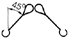 |
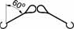 |
||||
| direkt | geschnürt | direkt | direkt | zweifach umgelegt |
|
| Nenndurchmesser des Kabelschlag- Anschlagseiles mm |
Tragfähigkeit in kg | ||||
| 24 | 3750 | 3000 | 5250 | 3750 | 15000 |
| 27 | 4750 | 3800 | 6650 | 4750 | 19000 |
| 30 | 6500 | 5200 | 9000 | 6500 | 26000 |
| 33 | 7500 | 6000 | 10500 | 7500 | 30000 |
| 36 | 9000 | 7200 | 12500 | 9000 | 36000 |
| 39 | 10500 | 8400 | 15000 | 10500 | 42000 |
| 42 | 12500 | 10000 | 17500 | 12500 | 50000 |
| 48 | 16000 | 12800 | 22500 | 16000 | 64000 |
| 54 | 20500 | 16400 | 28500 | 20500 | 82000 |
| 60 | 25000 | 20000 | 35500 | 25000 | 100000 |
Tabelle 5:
Endlos gelegte Kabelschlag-Anschlagseile (Kabelschlag-Grummets)
Neigungs- winkel |
Kabelschlag-Grummet mit Fasereinlage | Kabelschlag- Grummet mit Fasereinlage |
Zwei Kabelschlag-Grummets mitFasereinlage |
||||||
| 0° | 0° | bis 7° | 0° bis 45° | über 45° bis 60° |
0° bis 45° | über 45° bis 60° |
|||
| 1) | 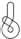 |
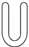 1) |
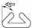 1) |
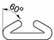 1) |
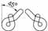 |
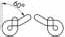 |
|||
| direkt | geschnürt | umgelegt | umgelegt | umgelegt | direkt | geschnürt | direkt | geschnürt | |
| Nenn- durchmesser des Kabelschlag- Grummets mm |
Tragfähigkeit in kg | ||||||||
| 12 | 2100 | 1650 | 4200 | 2950 | 2100 | 2950 | 2350 | 2100 | 1650 |
| 15 | 3200 | 2500 | 6400 | 4500 | 3200 | 4500 | 3600 | 3200 | 2500 |
| 18 | 4600 | 3600 | 9200 | 6500 | 4600 | 6500 | 5200 | 4600 | 3600 |
| 21 | 6300 | 5000 | 12600 | 8800 | 6300 | 8800 | 7000 | 6300 | 5000 |
| 24 | 8250 | 6500 | 16500 | 11600 | 8250 | 11600 | 9300 | 8250 | 6500 |
| 27 | 10500 | 8500 | 21000 | 14700 | 10500 | 14700 | 11800 | 10500 | 8400 |
| 30 | 11500 | 9000 | 23000 | 16100 | 11500 | 16100 | 12900 | 11500 | 9200 |
| 33 | 14000 | 11000 | 28000 | 19600 | 14000 | 19600 | 15700 | 14000 | 11200 |
| 36 | 16500 | 13000 | 33000 | 23100 | 16500 | 23100 | 18500 | 16500 | 13200 |
| 39 | 19500 | 15500 | 39000 | 27300 | 19500 | 27300 | 21800 | 19500 | 15600 |
| 42 | 22500 | 18000 | 45000 | 31500 | 22500 | 31500 | 25200 | 22500 | 18000 |
| 48 | 30000 | 23500 | 60000 | 41300 | 30000 | 42000 | 33600 | 30000 | 23500 |
| 54 | 37500 | 30000 | 75000 | 52500 | 37500 | 52500 | 42000 | 37500 | 30000 |
| 60 | 46000 | 37000 | 92000 | 64400 | 46000 | 64400 | 51500 | 46000 | 37000 |
Anmerkung 1:
Normalerweise paarweiser Einsatz, Hängegangregeln beachten.
Anmerkung 2:
Die Anschlagpunkte sollten einen Durchmesser von mindestens dem Zweifachen des Seilnenndurchmessers aufweisen.
Tabelle 6 a):
Endlos gelegte Kabelschlag-Anschlagseile (Kabelschlag-Grummets) aus Drahtseilen mit Stahleinlage der Seilklassen 6 x 19 und 6 x 36 (Auszug)
Neigungs- winkel |
Kabelschlag-Grummet mit Stahleinlage | Kabelschlag- Grummet mit Stahleinlage |
Zwei Kabelschlag-Grummets mit Stahleinlage |
||||||
| 0° | 0° | bis 7° | 0° bis 45° | über 45° bis 60° |
0° bis 45° | über 45° bis 60° |
|||
| 1) | 1) | 1) | 1) | ||||||
| direkt | geschnürt | umgelegt | umgelegt | umgelegt | direkt | geschnürt | direkt | geschnürt | |
| Nenn- durchmesser des Kabelschlag- Grummets mm |
Tragfähigkeit in kg | ||||||||
| 12 | 2200 | 1750 | 4400 | 3000 | 2200 | 3000 | 2400 | 2200 | 1750 |
| 15 | 3400 | 2700 | 6800 | 4750 | 3400 | 4750 | 3800 | 3400 | 2700 |
| 18 | 4900 | 3900 | 9800 | 6850 | 4900 | 6850 | 5500 | 4900 | 3900 |
| 21 | 6700 | 5350 | 13400 | 9400 | 6700 | 9400 | 7500 | 6700 | 5350 |
| 24 | 9000 | 7200 | 18000 | 12600 | 9000 | 12600 | 10080 | 9000 | 7200 |
| 27 | 11500 | 9000 | 23000 | 16100 | 11500 | 16100 | 12900 | 11500 | 9000 |
| 30 | 14000 | 11000 | 28000 | 19600 | 14000 | 19600 | 15700 | 14000 | 11000 |
| 33 | 17000 | 13500 | 34000 | 23800 | 17000 | 23800 | 19000 | 17000 | 13000 |
| 36 | 20000 | 16000 | 40000 | 28000 | 20000 | 28000 | 22400 | 20000 | 16000 |
| 39 | 23500 | 19000 | 47000 | 32900 | 23500 | 32900 | 26300 | 23500 | 19000 |
| 42 | 27000 | 21500 | 54000 | 37800 | 27000 | 37800 | 30200 | 27000 | 21500 |
| 48 | 35500 | 28500 | 71000 | 49700 | 35500 | 49700 | 39800 | 35500 | 28500 |
| 54 | 45000 | 36000 | 90000 | 63000 | 45000 | 63000 | 50400 | 45000 | 36000 |
| 60 | 55500 | 44500 | 111000 | 77700 | 55500 | 77700 | 62200 | 55500 | 44500 |
Anmerkung 1:
Normalerweise paarweiser Einsatz, Hängegangregeln beachten.
Anmerkung 2:
Die Anschlagpunkte sollten einen Durchmesser von mindestens dem Zweifachen des Seilnenndurchmessers aufweisen.
Tabelle 6 b):
Endlos gelegte Kabelschlag-Anschlagseile (Kabelschlag-Grummets) aus Drahtseilen mit Stahleinlage der Seilklassen 6 x 19 und 6 x 36 (Auszug)
Neigungs- winkel |
Kabelschlag-Grummet mit Stahleinlage | Kabelschlag- Grummet mit Stahleinlage |
Zwei Kabelschlag-Grummets mit Stahleinlage |
||||||
| 0° | 0° | bis 7° | 0° bis 45° | über 45° bis 60° |
0° bis 45° | über 45° bis 60° |
|||
| 1) | 1) | 1) | 1) | ||||||
| direkt | geschnürt | umgelegt | umgelegt | umgelegt | direkt | geschnürt | direkt | geschnürt | |
| Nenn- durchmesser des Kabelschlag- Grummets mm |
Tragfähigkeiten in t | ||||||||
| 66 | 69,0 | 55,0 | 138 | 96,6 | 69,0 | 96,6 | 77,0 | 69,0 | - - - |
| 72 | 84,0 | 68,0 | 168 | 117,6 | 84,0 | 117,6 | 95,2 | 84,0 | - - - |
| 78 | 102 | 81,0 | 204 | 142,8 | 102 | 142,8 | 113,4 | 102 | - - - |
| 90 | 144 | 115 | 288 | - | - | 202 | - | 144 | - |
| 102 | 196 | 157 | 392 | - | - | 275 | - | 196 | - |
| 120 | 300 | 240 | 600 | - | - | 420 | - | 300 | - |
| 132 | 392 | 314 | 784 | - | - | 550 | - | 392 | - |
| 144 | 505 | 404 | 1010 | - | - | 710 | - | 502 | - |
| 156 | 700 | - | 1400 | - | - | 980 | - | 700 | - |
| 168 | 800 | - | 1600 | - | - | 1120 | - | 800 | - |
| 183 | 1000 | - | 2000 | - | - | 1400 | - | 1000 | - |
Anmerkung 1:
Normalerweise paarweiser Einsatz, Hängegangregeln beachten.
Anmerkung 2:
Die Anschlagpunkte sollten einen Durchmesser von mindestens dem Zweifachen des Seilnenndurchmessers aufweisen.
Beim Anschlagen mit mehreren Strängen dürfen nur zwei Stränge als tragend angenommen werden. Dies gilt nicht, wenn sichergestellt ist, dass sich die Last gleichmäßig auch auf weitere Stränge verteilt. Bei ungleicher Lastverteilung darf die zulässige Belastung der einzelnen Stränge nicht überschritten werden.
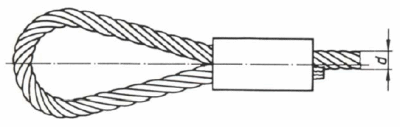
Die Angaben können auch auf einem Etikett/Anhänger dokumentiert sein.
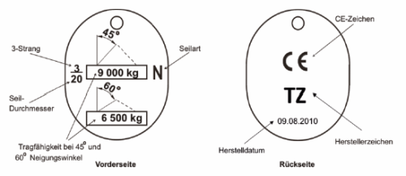